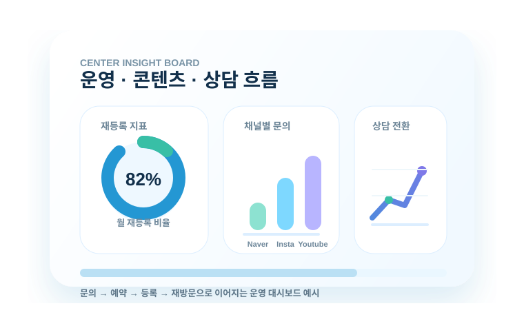

접근성, 치료실 구성, 보호자 대기 동선까지 운영 관점으로 확인합니다.
Consulting Point
예쁜 계획서보다 실제 현장 기준이 중요합니다
병원부설 아동발달센터는 의료 전문성, 치료실 운영, 보호자 상담, 인력 관리, 광고 홍보가 따로 움직이면 안정적인 수익 구조를 만들기 어렵습니다. 라포는 이 요소들을 하나의 운영 시스템으로 묶습니다.
입지 판단
지역 수요, 접근성, 경쟁 환경, 병원 동선을 기준으로 개원 가능성을 확인합니다.
운영 흐름
상담, 예약, 수업, 수납, 재등록까지 반복 가능한 프로세스로 정리합니다.
성과 관리
문의, 등록, 매출 흐름을 보고 다음 실행을 조정합니다.
Business Area
시설 구축부터 운영 교육, 시장 분석, 홍보까지 함께 봅니다
개원 이후 실제로 필요한 업무를 기준으로 병원부설 발달 클리닉의 운영 흐름을 설계합니다.
시설 구축 · 운영 관리
치료실, 대기공간, 상담실, 보호자 동선과 실내 구성 방향을 정리합니다.
시장 분석
주변 경쟁시장, 지역 수요, 접근성을 확인해 개원 전략을 도출합니다.
마케팅 · 광고 홍보
성공사례 기반의 온라인·오프라인 홍보 시스템을 제안합니다.
운영 인력 구축
센터장, 치료사, 행정 인력의 역할을 분리하고 채용·관리 기준을 만듭니다.
운영 교육
상담, 수납, 수업, 컴플레인 대응, 보고 체계를 반복 가능한 교육으로 정리합니다.
트렌드 제안
치료계 흐름과 보호자 니즈를 빠르게 반영해 실행 방향을 제안합니다.
Opening Process
개원 위치부터 운영 안정화까지 단계별로 진행합니다
현황 상담
병원 상황, 공간, 목표, 예산, 개원 시점을 확인합니다.
입지·상권 진단
주변 수요와 경쟁 환경을 보고 운영 가능성을 판단합니다.
시설·인력 세팅
치료실, 장비, 인력, 역할 기준을 구성합니다.
운영 교육
상담, 예약, 수납, 보고, 재등록 기준을 교육합니다.
운영 모니터링
문의·등록·매출 흐름을 보고 개선안을 실행합니다.
Profit Structure
수업 수익과 등록 인원을 기준으로 현실적인 매출 흐름을 계산합니다
치료실 수, 치료사 배치, 하루 수업 수, 아동 1명당 월 결제 예상액을 기준으로 무리 없는 운영 구조를 잡습니다.
치료실 수와 회전율 기준 산정아동 1명당 월 결제 예상액 계산등록인원에 따른 단계별 성장 목표 설정
Example Model
아동 1명당 월 결제 예상
월 160만원평균 주 2회 권고, 1회 20만원 기준 예시입니다. 실제 금액은 지역과 운영 방식에 따라 달라질 수 있습니다.

Management
개원 후에도 운영 기준이 흔들리지 않도록 관리합니다
문의 응대
첫 문의에서 상담 예약으로 이어지는 문구와 기준을 정리합니다.
예약 관리
치료실, 치료사, 시간표 기준을 관리 가능한 형태로 만듭니다.
보호자 상담
초기상담, 경과 안내, 재등록 상담 흐름을 준비합니다.
보고 체계
원장님이 필요한 지표를 확인할 수 있도록 주기적인 리포트를 구성합니다.
OPERATION CONSULTING
상담 문의 개원 준비와 운영 안정화, 지금 기준부터 점검하세요
입지, 시설, 인력, 수익 구조를 현재 상황에 맞춰 함께 확인합니다.